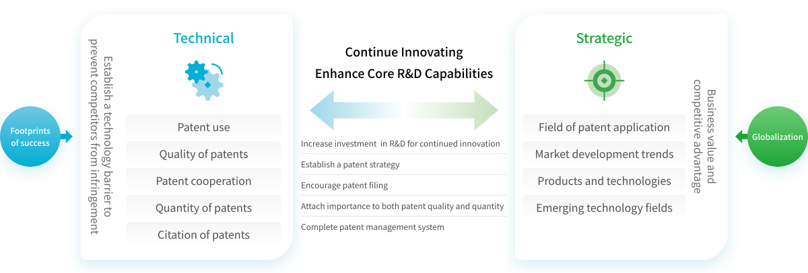
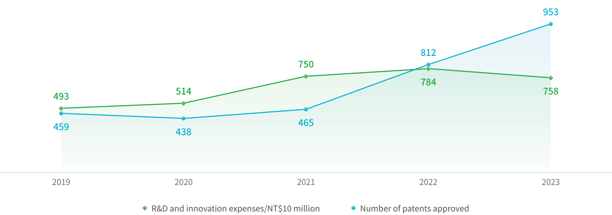
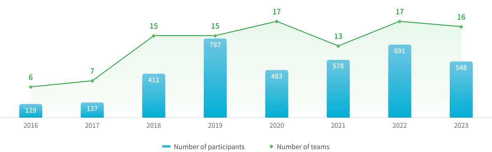
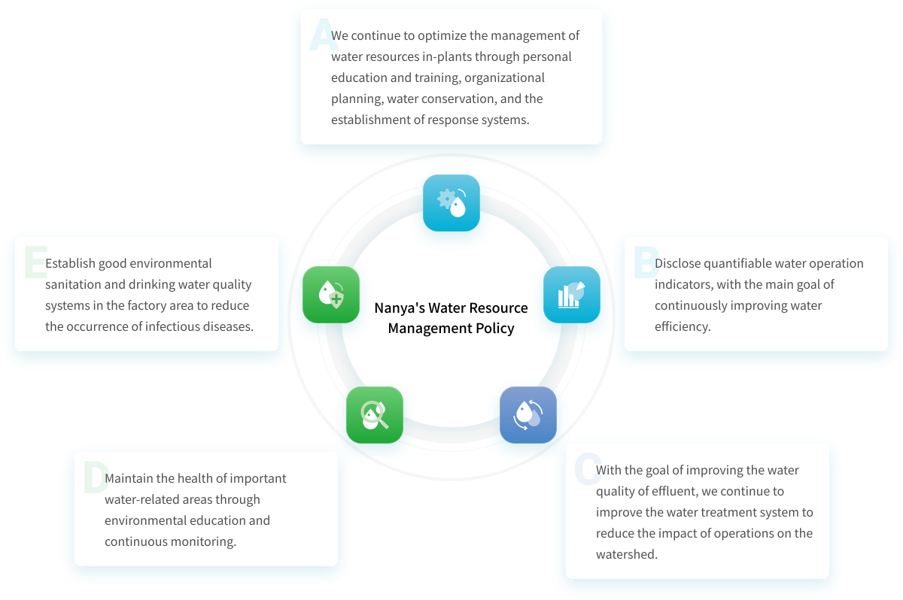
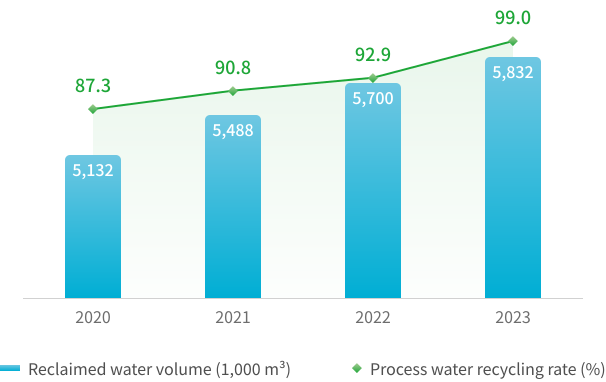
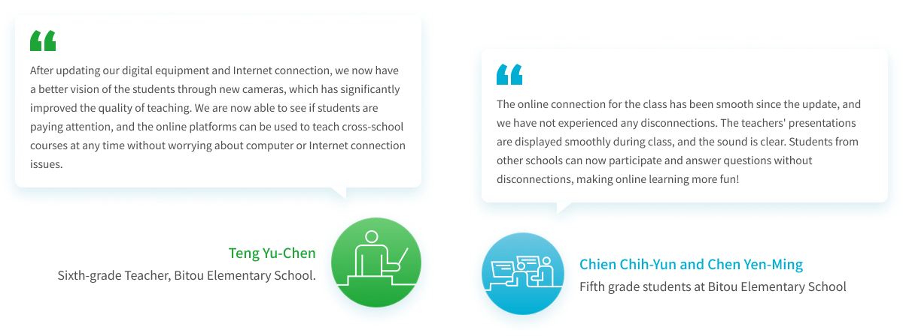
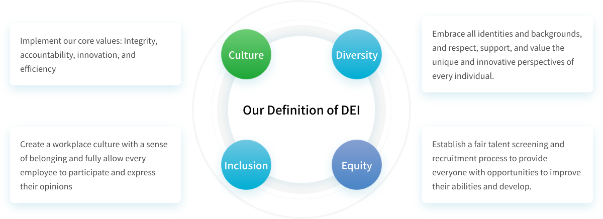
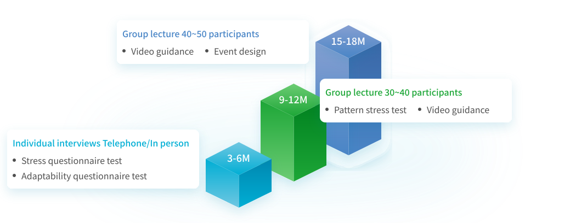
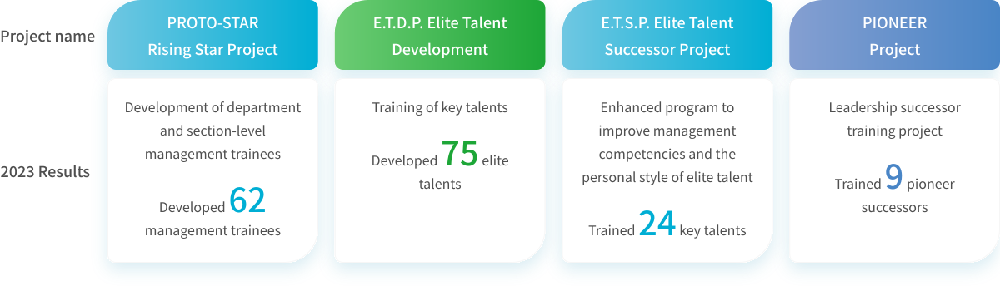
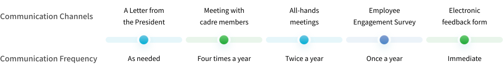

Feature Stories

Story 1 Innovation and Patent Management
With innovation as the main drive of our growth, Nanya Technology is committed to improving process efficiency and production capacity. We develop technical capabilities, optimize R&D process, and reserve innovative talent to ensure competitiveness. Nanya has a dedicated team to protect and utilize R&D results by establishing intellectual property rights on a global scale. In addition, we launched the "Outstanding Talent" project, which includes an internal R&D innovation competition. The competition encourages innovative proposals by cross-departmental collaboration, strengthening Nanya's innovation foundation.

Intellectual Property Rights & Patent Strategies
To effectively address technology and market competition, Nanya integrates R&D resources and builds our patent portfolio with technical and strategic approaches to meet our goals of patent quantity and quality.
-
 Strategic approach
Strategic approachSupport business strategy and competitiveness in the market by targeting key areas, including industry trends, competitors' technologies or products, and emerging technologies.
-
 Technical approach
Technical approachTo build Nanys's technological edge, we improve the quantity, quality, cooperation, application, and citation of patents to protect R&D results and prevent infringement incidents.
In 2023, Nanya has 953 patents granted, and accumulated 6,800 patents around the globe. In the same year, we were selected as the Top 100 Innovator by Clarivate, representing a milestone recognizing our efforts in innovation.
- 2023 Clarivate Top 100 Global Innovator
- Taiwan IP Management System TIPS Certified
- Number of patents approved in 2023 953 cases
- The cumulative global patents > 6,800 cases
Nanya Patent Portfolio Management Strategy

Patent results in recent years

Innovation and cultivation of outstanding teams
Nanya has launched the "Outstanding Team Competition" project in 2005 to stimulate the innovation energy within the Company. Inviting employees to form teams across at least three departments, and compete in teams based on innovation, benefits of proposal, and the core value of cooperation. An average of about 15 teams have participated in the competition every year since 2015. Besides creating an atmosphere of innovation in the Company, business operating procedures are optimized through proposals by the teams, achieving the purpose of driving sustainable development through innovation. Highlights of the winning Team's proposal in 2023 are as follows:
-
Outstanding team
The team leverages AI technology to replace hardware detection, which eliminated the need of high-altitude operations and enhance productivity of the workers. The proposal allows lean production and increase factory safety, demonstrating the principles of ISO45001.
-
Champion team
Specific process yield increase 3.6% by developing a new experimental formula. Champion team use new AI recognition and analysis methods to replace traditional ways, allowing development data to be analyzed accurately. By following the new method, we can correct the direction of experiments, reduce the cost of scrapping, and was estimated to save NT$1,554 million annually.
-
Finalist team
Nanya has been through 3 R&D generations. A total of 135 optical measurement models were developed in response to different process structures as providing rapid process monitoring and optimization, shortening the schedule of R&D process, reaching the need of quick R&D measurement, monitoring the variance in process experiments accurately, moreover to retain subsequent value of wafers with no damage.
2016-2023 Participation of Outstanding Teams



 The innovation proposals of the winning teams are posted in the Company for employees to read.
The innovation proposals of the winning teams are posted in the Company for employees to read.

Story 2 Obtained AWS certification, moving towards the goal of water resource sustainability
Nanya adopted the only sustainable water management standard in the world, Alliance for Water Stewardship Standard (AWS), passed the evaluation in 2023, and was recognized as the highest level in the AWS, Platinum Level Certificate, in 2024. We continue to manage every single water drop from the source to the usage in processes and finally to be discharged effectively and pragmatically. Nanya protects the ecological environment, cherish water resource, and improve our water usage efficiency. We will keep following the five major achievements of AWS and systematically implement water resource sustainability management.
Formulate policies and guidelines to practice good water management
Nanya formulated the water resources management policies and standard processes and procedures for operations, in order to improve water management efficiency through systematic management. We reviewed water resources-related risks through the Company's risk management framework, implemented improvement measures, and formulated response plans to effectively manage risks. Nanya is transparent, open, and has establish good interactions and relationships with stakeholders. We share water resources-related information in a timely manner and participate in environmental protection activities to improve the Company's image in society.

-
Actively promote water conservation to reduce water consumption
Nanya actively implements various water conservation measures, implement water-saving results through work policies, achieve water conservation through water reduction and recycling methods, promotes water conservation through daily management methods, establish wastewater classification and treatment and adopt multiple recycling methods to maximize the use of water resources. In recent years, Nanya has focused more on the construction of recycling systems, and implemented various water conservation measures. The process water recycling rate reached 99% in 2023, the total amount of wastewater recycled reached 5.83 million tons, accounting for 172% of total water consumption.
-
Process Water Recycling Rate and Volume


Excellent water quality of effluent reduces environmental pollution
In addition to complying with regulatory standards, more stringent internal control standards have been set for effluent water quality. In accordance with local wastewater discharge laws and customer requirements, Nanya ensures that the wastewater discharged by each plant is in compliance with regulations through irregular internal audits. Furthermore, our wastewater discharge outlets are equipped with an automatic continuous water monitoring system (CWMS) in accordance with regulatory requirements, which transmits water quality information to the competent authority in real time. Discharge values can be immediately viewed on the Ministry of Environment website, allowing government agencies and the public to understand the Company's water quality, achieving the effect of public supervision. Nanya's wastewater discharge over the years has complied with effluent standards, and did not receive any fines. We proactively disclose annual wastewater discharge testing data in the ESG report, so that stakeholders can understand our wastewater treatment at any time.
Be Aware of Water-Related Areas Health, Maintain Favorable Environment and Ecology
Nanya regularly tests the water quality in the river basin to maintain the environmental health of important water-related areas. We continue to organize environmental public welfare activities every year. For example, began working with the Society of Wilderness in removing Mikania micrantha from Wugu Wetland in 2020, in order to maintain biodiversity and protect habitats, so that native species can continue to survive in the habitat without being harmed. We organized beach cleanup activities with our value chain partners. In 2020 to 2022, we held 2 events not only to pick up trashes, but even more to deliver the spirit and power of environmental education and reducing plastic usage.
-
 Removing Mikania micrantha from Wugu Wetland
Removing Mikania micrantha from Wugu Wetland
-
 Tamsui River estuary coastal cleanup
Tamsui River estuary coastal cleanup

Safe Drinking Water, Hygienic Environment, Protect Employees' Health
We have drinking fountains in the panties in every floor of Nanya's buildings to provide adequate source. To ensure the safety of drinking water, management unit will arrange professional contractors to test the water quality and post the result with testing date on the drinking fountains for inspection. Also, rules are posted in obvious place to remind users to maintain hygiene and cleanliness.

Story 3 Youth Empowerment Project
In 2023, Nanya launched the Youth Empowerment Project to extend the educational blueprint from universities and high schools to elementary schools, aiming to support students with extraordinary talents and implement equal rights in education beyond technology fields.
Distance Online Learning Equipment for Rural Elementary Schools
Even though New Taipei City is defined an urban area, there are still many rural areas that are lack of resources because of its vast territory. Especially due to the low number of students and teaching resources cause by population migration and declining birthrate, rural elementary schools are facing the dilemma of being merged or even being abolished. Little amount of students makes those schools hard to arrange group learning, but instead, cross-school distance online learning became the solution. With the power of technology, Nanya cooperate with the New Taipei City Education Department and rural elementary schools including Bitou, Shifen, Fulian, to create distance co-learning. Nanya donated digital distance learning equipment and arranged information technology expertise volunteers to help schools establish a complete online distance co-learning system, jointly driving the digital transformation of rural education in New Taipei City. Nanya hopes to use its power to provide students in rural areas of New Taipei City with more diverse and cross-school interactive discussions, stimulate students' thinking, and further supplement the educational resources of rural schools, promoting academic equality.


Bronze Medalist Ting Yu-En, the Women's Inline Freestyle Skating Speed Slalom of Roller Skating at the 19th Asian Games, 2023. (Left Fourth) Chang Ping-Cheng, first place in the Indonesia International Double Table Tennis Championship in 2023. (Right Fourth)
Students-Athletes Scholarship
Starting in 2022, children of Nanya employees are eligible to apply for the Student-Athlete Scholarship. All students under the age of 24 who meet the qualifications of the national athlete or have outstanding performance in the National Games, National High School Games,and competitions recognized by the Ministry of Education will be sponsored. This support will enable players to focus on training, gain competition experience, and concentrate on their professional career development. As of 2023, scholarships were provided to 4 national athletes and 4 players with outstanding performance in table tennis, ice skating, taekwondo, competitive gymnastics, and diabolo.

Story 4 Embrace Diversity, Innovate Inclusion and Move Towards Sustainability
Diversity, Equity and Inclusion (DEI) is one of Nanya Technology Corporation's sustainable development strategies, and a key element in the process of Nanya realizing its vision of "Being the Best DRAM Partner for a Smart Generation." Upholding the spirit of being people-oriented, Nanya promotes DEI and internalized it into the organizational culture and Employee Code of Conduct, laying a good foundation for the Company's sustainable development.

To create a workplace environment full of curiosity and collaboration, we apply DEI values in every process of our routine work from the eight stages of talent attraction, recruitment, onboarding, training, development, communication, impacts and improvements.

Attraction
Establish diversity and inclusion as our brand as an employer to attract diverse talents.


Recruitment
We changed all items on the interview information form that are not directly related to work to optional, such as gender, age, family status, etc., incorporating DEI values into the recruitment process, actively reducing the chance of bias. This makes the recruitment process friendlier. We also provide recruiters with training on DEI interview skills.
Onboarding
Through the new employee training camp and Buddy coaching, we help new employees adapt to the workplace environment and get started smoothly.
-
New employee training camp
Every new employee goes through a five-day new employee training camp starting on their first day at the Company. During the training period, new employees can experience and demonstrate our core values in the team consensus building camp, and learn about the Company's environment, regulations, systems, and organization from internal lecturers. It can also form friendships among new employees to make them feel secure and a sense of belonging.
-
Buddies for new employees in the department
The department head appoints senior personnel to serve as buddies for new employees for one year, helping new employees become familiar with the department's organization, adapt to the environment, provide coaching in work, and provide assistance required in routine work. To effectively help buddies build relationships with new employees, we prepared and provided each buddy with a new employee coaching manual, and arranged for buddies to receive new employee coaching technique training courses, which improve their coaching skills and establish a friendly relationship of mutual trust and effective communication.
-
Consultation services for new employees
For new employees who have worked at the Company for less than two years, we adopt systematic and supportive guidance measures and refer employees to professional organizations to solve employees' problems, so that they feel respected and cared for, while reducing the difficulties they encounter at work, and stably learn and develop in their post.
Roadmap for consultation new employees

Training
We strive to improve employees' awareness and understanding of biases and create a sense of belonging and connection, in order to create a diverse and inclusive workplace environment. For example: "woMen Era" activities provides a platform for continuous dialogue, and the humanities and art literacy lecture series showcases employees' curiosity and inspires new thinking for continuous innovation, which can improve employees' awareness, understanding and participation in diversity and inclusion.
-
 Group photo during the women's empowerment forum
Group photo during the women's empowerment forum
-
 2023 Humanities and Arts Literacy LectureInvited Dr. Rednose to share life stories
2023 Humanities and Arts Literacy LectureInvited Dr. Rednose to share life stories
Development
Cultivating diverse management talents can help improve organizational management, including diversity in age, gender, and background, which is crucial when facing challenges of multiculturalism and globalization. It can also ensure that the Company continues to have excellent management talents and maintain the core values and culture of Nanya, allowing managers to better lead the organization toward sustainable development.
Management Talent Development Project

Communication
Use two-way communication to collect employee feedback and continuously optimize the Company's DEI measures. We created various communication platforms for employees to express their needs, and fully utilize these active and passive channels, including questionnaire surveys, electronic opinion boxes, all-staff meetings, and social media platforms. These resources help improve mutual understanding and facilitate more meaningful communication and dialogue to create a better experience for all employees.
Communication channels for inclusion

Impacts
Build partnerships and promote and influence social diversity. Our social engagement themes, "Talent Cultivation," "Environmental Protection," "Humanistic Care," and "Community Harmony" help promote inclusive and flexible economic development, ensuring that no one is left behind. We incorporated DEI into every aspect to build and strengthen our commitment to provide opportunities for individuals, families and communities.
-
 Talent Cultivation
Talent CultivationWork together with schools to implant the concept of sustainability in young students, cultivate diverse young professionals, and talents for all sectors, empower and implement equal rights in education, and reduce the gap between urban and rural areas.
Donated NT$ 1,000,000 in equipment to rural elementary schools for distance learning -
 Environmental Conservation
Environmental ConservationTake action to improve the impact of climate change and environmental pollution on the Earth, raise awareness of environmental conservation, protect biodiversity, and create a harmonious relationship between people and the environment.
Environmental protection initiative Biodiversity: Removed 184.3 kg of Mikania micrantha -
 Humanistic Care
Humanistic CareEncourage and support employees to participate in volunteer services, and cooperate with governments, non-profit organizations, and other enterprises to provide resources and support to promote local cultural features.
The Renaissance activity series had a total of 8,520 participants -
 Community Harmony
Community HarmonyWork together to build thriving communities by addressing local needs and respecting the uniqueness of the communities in which we operate.
Deepen community communication: Interacted with 16,797 people in the neighborhood
Improvement
We should plan a comprehensive action plan to realize our DEI strategy, and established key measurable indicators and regularly review various indicators. We implemented various projects, developed new processes or improved existing processes to transform our commitment into meaningful actions, which enable individuals, teams and organizations to reach their full potential, ensuring that all employees feel recognized and have opportunities to develop and grow.

We strive to keep moving forward
Looking towards 2024 and beyond, NANYA will continue to promote Diversity, Equity and Inclusion (DEI) measures to support for our employees, customers and society. Let us embrace diversity, innovate for inclusion and move towards sustainability.